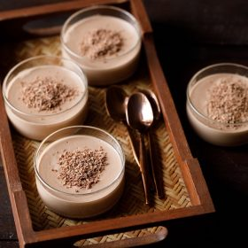

Chocolate Pudding

Instructions
For making cocoa powder slurry
- 1. In a bowl take cocoa powder and and cornstarch. For a more chocolaty taste, you can add
- 2. Add the whole milk. Note that the milk can be cold or at room temperature.
- 3. Whisk to a smooth slurry. Set aside. There should be no lumps.
Making Chocolate Pudding
- 1. Take milk in a heavy sauce pan. Heat the milk on a medium-low flame and let it become
warm or slightly hot. Do not boil the milk.
- 2. When the milk becomes warm or lightly hot then add the sugar.
- 3. Mix and stir until all the sugar is dissolved.
- 4. Keep the heat to its lowest and then add the cocoa powder and corn flour slurry.
- 5. As soon as you add the slurry, begin to stir and mix with a wired whisk.
- 6. Mix very well and simmer the pudding mixture on a low heat.
- 7. Keep on stirring continuously till the pudding mixture thickens.
- 8. Cook till the chocolate pudding mixture thickly coats the back of a spoon. It should coat the
back of a spoon and slowly drops or fall from the spoon. The consistency will be medium
thick.
- 9. Switch off heat and add the vanilla extract or vanilla essence.
- 10. With a wired whisk mix again to combine the vanilla with the rest of the pudding mixture.
- 11. Immediately pour the chocolate pudding mixture in small to medium heatproof glass or
steel bowls.
- 12. With a spatula scrape everything and add the thick pudding clinging at the sides of the pan
also to the bowl.
- 13. Cover the bowls with a foil or lid. You can let the pudding cool and then cover with foil.
Setting Eggless Chocolate Pudding
- 1. When the pudding cools at room temperature, then keep in the fridge to set for 4 to 5
hours or overnight.
- 2. The pudding will be wobbly once it is set.
- 3. Serve chocolate pudding after it has set. While serving chocolate pudding add some grated
chocolate or sliced dry fruits or nut on top. You can also serve it with some whipped cream.
Notes
- 1.You can make this chocolate pudding recipe with dutch processed cocoa and even raw
cacao powder.
- 2.If you use sweetened cocoa powder or drinking chocolate, then add sugar according to your
taste preferences.
- You can also opt to add 1 to 2 teaspoons of instant coffee to this pudding. Add the instant
coffee when you add the vanilla extract and stir to mix.
- 3.Instead of cornstarch, you can use arrowroot flour, rice flour or tapioca flour. You may need
to increase the proportion of these flours if needed.
- 4.For a vegan version use plant based milks like almond milk, cashew milk, rice milk or oats
milk. Coconut milk can separate, so I do not suggest using it for this recipe.
- 5.Scale this recipe easily to make a larger serving for small parties.